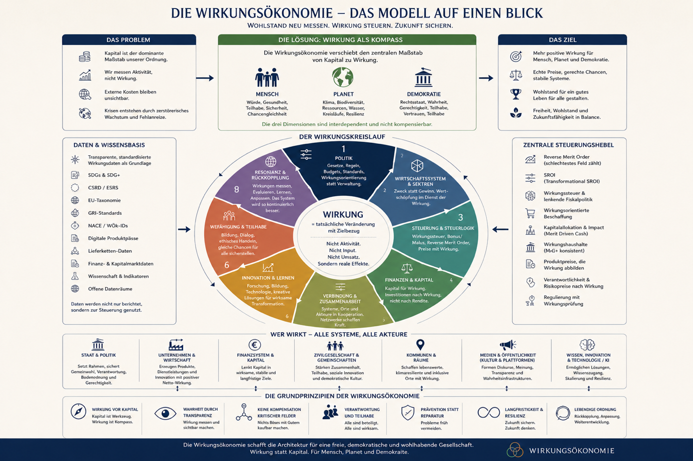

WÖk-IDs
Standardisierte Wirkungsindikatoren
Standardisierte Wirkungsindikatoren für Produkte, Tätigkeiten, Organisationen und politische Maßnahmen.
 Wirkungsökonomie
Wirkungsökonomie
Das Modell
Die Wirkungsökonomie übersetzt Wirkung in eine messbare Steuerungslogik. Sie verbindet Daten, Bewertung, Rückkopplung und Lernen.
Grundkreislauf
Handlung oder Unterlassen erzeugt Wirkungspotenzial oder Wirkungsrisiko. Daraus entstehen Zustandsveränderungen. Diese werden bewertet, in Lenkung übersetzt und durch Rückkopplung überprüft. So wird Wirkung zur lernenden Steuerungslogik.
Gesamtmodell
Die vollständige Modellgrafik zeigt, wie Problem, Kompass, Wirkungskreislauf, Datenbasis, Steuerungshebel, Akteure und Grundprinzipien zusammenhängen.

Bausteine
WÖk-IDs
Standardisierte Wirkungsindikatoren für Produkte, Tätigkeiten, Organisationen und politische Maßnahmen.
Scorecards
Übersetzen Daten in nachvollziehbare Bewertungen.
Reverse Merit Order
Das schwächste Wirkungsfeld entscheidet. Negative Wirkung kann nicht durch positive Wirkung verrechnet werden.
T-SROI
Misst transformative Netto-Wirkung, nicht nur finanzielle Rendite.
Wirkungssteuer
Macht Wirkung in Preisen und Steuerlast sichtbar.
Wirkungsrat
Sichert Indikatoren, Benchmarks, Transparenz und Weiterentwicklung.
Bewertungslogik
Die Wirkungsökonomie verhindert Schönrechnung. Wenn ein Produkt beim Klima gut abschneidet, aber auf Kinderarbeit beruht, bleibt es schädlich. Wenn ein Unternehmen hohe Gewinne erzielt, aber Demokratie, Gesundheit oder ökologische Grundlagen schwächt, kann diese Wirkung nicht durch einzelne positive Maßnahmen ausgeglichen werden.
Datenbasis
Die Wirkungsökonomie nutzt bestehende Daten- und Berichtslogiken als Grundlage: SDGs, SDG+, CSRD, ESRS, GRI, EU-Taxonomie, digitale Produktpässe, Branchenbenchmarks und Wirkungsdatenräume. Entscheidend ist nicht, noch mehr Berichte zu erzeugen, sondern vorhandene Daten steuerungswirksam zu machen.
Rückkopplung
Preise
Produkte mit negativer Wirkung werden teurer, Produkte mit positiver Wirkung günstiger.
Steuern
Steuerlast richtet sich an Wirkung aus, nicht nur an Produktkategorien oder Einkommen.
Kapital
Investitionen fließen dorthin, wo positive Netto-Wirkung entsteht.
Politik
Maßnahmen werden nicht nur angekündigt, sondern an Wirkung überprüft.
Öffentlichkeit
Medien, Sprache und Plattformen werden als Wirkungsräume sichtbar.
Reporting
Klassisches Reporting
Dokumentiert, erklärt, kommuniziert und bleibt oft folgenlos.
Wirkungsökonomie
Bewertet, koppelt zurück, verändert Preise, Steuern und Kapital und macht Lernen möglich.
Instrumente
Anwendung
Die Wirkungsökonomie bleibt nicht bei Begriffen stehen. Sie verändert die Art, wie Produkte, Unternehmen, Steuern, Kapital, Medien, Wohnen und Arbeit bewertet werden.